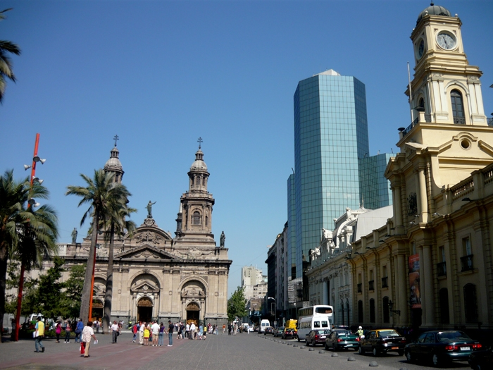

Attending AMW 2023
The 15th edition of AMW will be held in Santiago de Chile.
About Chile and Santiago
Chile is located in western South America. It is the southernmost country in the world and closest to Antarctica, stretching along a narrow strip of land between the Andes Mountains and the Pacific Ocean. Chile is one of the most economically and socially stable nations in South America, and leads Latin America in competitiveness, per capita income, globalization, peace, and economic freedom.
Santiago also known as Santiago de Chile, is the capital and largest city of Chile and one of the largest cities in the Americas. It is located in the country's central valley and is the center of the Santiago Metropolitan Region, which has a population of 8 million. Most of the city is situated between 500–650 m (1,640–2,133 ft) above sea level. Santiago has a cool semi-arid climate, with Mediterranean patterns: warm dry summers (October to March) with temperatures reaching up to 35 °C (95 °F) on the hottest days; winters (April to September) are cool and humid, with cool to cold mornings; typical daily maximum temperatures of 14 °C (57 °F), and low temperatures near 0 °C (32 °F). (Source: Wikipedia)
Touristic Attractions
Visit Santiago's Old Town, where you'll see the Cathedral, La Moneda Palace, and the Museum of Precolumbian Art. You can climb the Santa Lucía hill with a small castle on top. Visit the San Cristóbal hill, which is crowned by a large statue of the Virgin Mary and up there you can get a panoramic view of the whole city. To relax, you can visit the hipster Lastarria Neighborhood, full of bars, cafés and boutiques, or the more classic Bellavista Neighborhood. If you like parks, visit the Bicentenario Park where you can feed the flamingos; the Araucano Park has an aviary with many species of birds; or the Quinta Normal Park, which is full of museums including the Museum of Natural Sciences and the Railway Museum. Take a hike along the Quebrada de Macul Park, where you can also see the Baha'i Temple. You can go on top of Latin America’s tallest skyscraper (SKY Costanera) to see the sunset. If you are a wine enthusiast, you can visit the Cousiño Vineyard that has a French-style colonial house.
How to get to Santiago
The first step to reach Santiago is to arrive to the International Airport Arturo Merino Benítez (SCL), which is located outside the city. There are direct flights to Santiago from Europe, North America and Latin America. You can get to the city by public transport, taxis, Uber, etc. For more details check this link.
Visa information
To visit Chile, you only need to show your identification document (identification card or passport), and depending on your country of origin, your stamped visa. If you are a citizen of South America, the European Union, the United States, Canada, and Australia, you do not need a tourist visa. However, some countries must pay a cash fee (reciprocity tax) upon arrival at the airport of Chile. Most tourists are allowed to stay 90 days in the chilean territory.
To check general information and requirements for entering Chile, please follow this link.
Please contact us at amw2023org@gmail.com to request an invitation letter if you do need it for a Visa application.
About the venue
AMW 2023 will be held in the Faculty of Phisical and Mathematical Sciences of the University of Chile. The Faculty is located in the center of Santiago, besides the O'higgins Park, and is at a 10 minute walk to Metro stations "Toesca" and "Parque O'higgins" of Metro Line 2 (color yellow). Santiago has a great public transport system, and you may plan your route using Google Maps using this link. The exact address is Beauchef 850, Santiago, Chile.
Accommodation
To be announced.